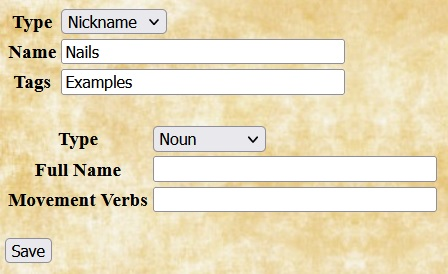

The Weird West rule set allows you to add homebrew choices to all of the same types discussed in the SWADE Homebrew Examples document other than era and race. In addition, the Weird West plugin also allows you to add homebrew ethnicities and nicknames.
Ethnicities |
Quilvyn uses ethnicities for generating random character names. When adding a homebrew ethnicity, Quilvyn displays fields for entering lists of masculine, feminine, neutral, and family names, as well as a menu for specifying whether names for the ethnicity are shown with family name first (Eastern) or personal name first (Western). The example shows the entry for the Norwegian ethnicity, with a representative selection of Norwegian names. |
Nicknames |
Nicknames are individual words that Quilvyn combines to create epithets when randomizing character names. For homebrew nicknames, the Type value indicates whether the nickname is a part of speech (adjective, noun, preposition, or verb), an animal, an object in nature, or an unusual shortened form of a longer name (e.g., "Bill" as a shortened form of "William"). Quilvyn also provides a box for entering the list of full names that a short name relates to and another for listing the ways in which an animal may move. The example shows an entry for each type of nickname. With these homebrew choices enabled, Quilvyn might randomly generate the names Alexander "Hot Nails Lex" Horton and Toad Who Calls Beyond Lake. |